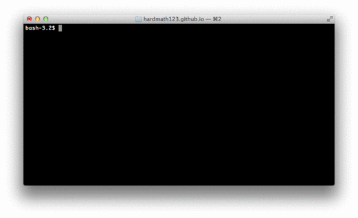

PreTTY Screenshots
How to use the command line for screen capture tricks
Thursday, May 14, 2015 · 3 min read
Apparently it has recently become fashionable on Github READMEs to put in a screenshot of a tty rather than explain the usage in actual words. There’s nothing wrong with them for the most part, but what bothers me is that all these screenshots are ugly. The links above are in increasing order of beauty.
It turns out that taking nice screenshots is filled with icky pitfalls and undocumented secrets. Here’s how you do it right—on a Mac running a relatively recent OSX.
Basic principles
First of all, make sure you really want to use a screenshot. Plaintext is generally enough to convey what your project does, and all the text is copyable.
You should only be using a screenshot if your project has some curses-esque behavior—messing with colors and drawing and raw mode and all that jazz.
When taking a screenshot, make sure your terminal profile (custom colors, dark
background, etc.) doesn’t interfere with anything. Also, make sure your
terminal prompt ($PS1) is sufficiently normal. Yes, a plain > is
minimalistic and pretty. But it’s confusing—are you running bash, or is the
prompt part of your program’s interface?
Finally: use small windows. It’s hard to read text if you take a screenshot of an enormous terminal window and shrink it down.
Key combos
Most people know that you can use cmd-shift-4 to enter screenshot mode and select part of the screen. A lesser-known trick is that you can press “space” to enter window selection mode. This lets you click on a window to take a screenshot of that window; and you end up with this (click to enlarge):
{kind=link}
Why is this better than taking a normal screenshot and cropping? Because this method has the underlying code actually draw a fresh, high-resolution copy of your window—even in full-screen mode. It also includes that pretty shadow (which, by the way, is rendered with a translucent PNG alpha channel so it looks good on every background).
It’s also, to be honest, much easier for the lazy.
Command-line screenshots
Surprisingly, this screen capture mechanism has a command-line API. Unsurprisingly, it has terrible documentation.
The command itself is called screencapture(1). You want to feed it the
undocumented-in-the-man-page -w option to specify the window ID.
To get the window ID, you can use AppleScript’s tell app "$APPLICATION" to id
of window $N command, where $N is the index of the window from “top” to
“bottom”. You want to set $APPLICATION to Terminal and $N to “1” to get
the focused window. Putting it together, we have:
$ screencapture -o -l $(osascript -e 'tell app "Terminal" to id of window 1') screenie.png
This is, of course, terribly un-useful because it’ll take a screenshot of the
window the moment you type this in. I would suggest prefixing it with sleep
5;, and running it in a separate window (not a separate tab—that would get
captured in your output!). This gives you five seconds to switch to your target
window and get ready for the screenshot.
Animating with Imagemagick
Sometimes, you can only really show how your project works with an animated GIF.
In general, it’s good to keep GIFs short and small. They should loop cleanly: the easy way to accomplish this is by running “clear” at the end of your program so that the terminal state is restored to what it was before you ran it.
To make a GIF, you need to take multiple screenshots by looping
screencapture(1) (you don’t really need a delay, since the process of
capturing is so slow):
rm screenies/screenie-*.png
N=0
while true; do
screencapture -l $(osascript -e 'tell app "Terminal" to id of window 1') screenies/screenie-$(printf "%05d" $N).png
printf "Created %05d\n" $N
let N=$N+1
done
Then, you can use Imagemagick (brew install imagemagick) to stitch them into
a GIF using the convert(1) command. Make sure you specify -alpha remove for
each frame so that the shadows get rasterized properly:
convert $(for a in screenies/*; do printf -- "-delay 1x60 -alpha remove %s " $a; done; ) result.gif
This step will take a while and output a monstrously huge GIF, because the PNGs
are pretty big. You can use Imagemagick -quality and -resize to shrink them
substantially:
mkdir screenies-compressed
cd screenies
for a in *; do
convert -quality 80 -resize 60% $a ../screenies-compressed/$a
done;
cd ..

If you take screenshots often, it’s probably worth aliasing these commands in
your ~/.profile.